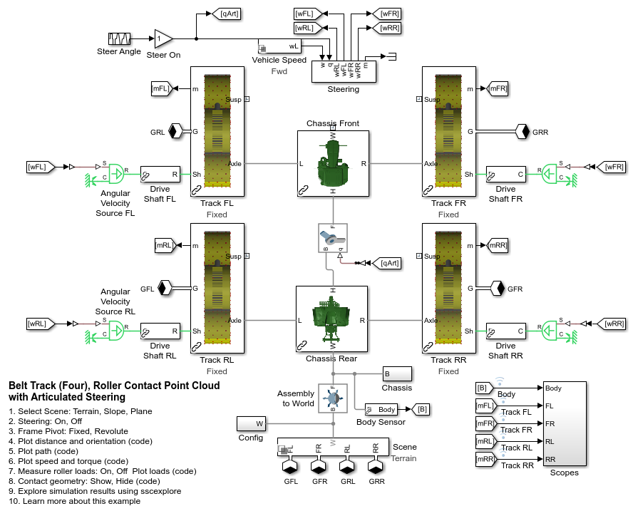
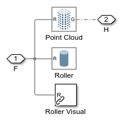
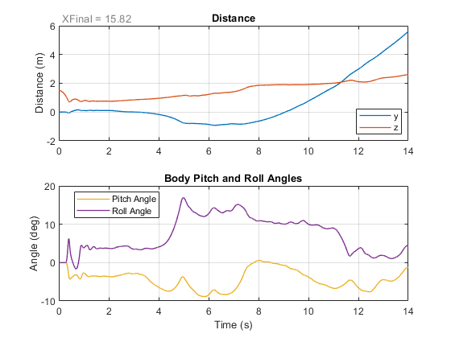
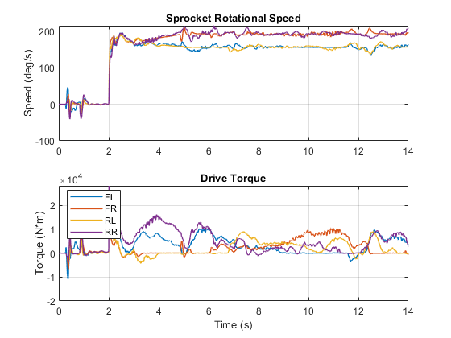
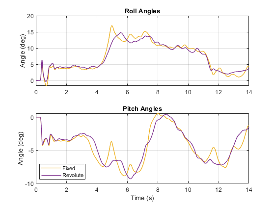
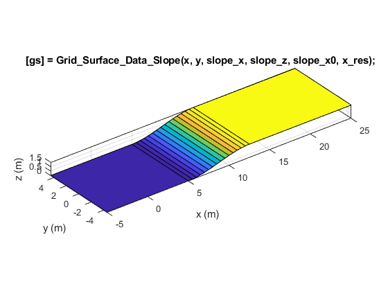
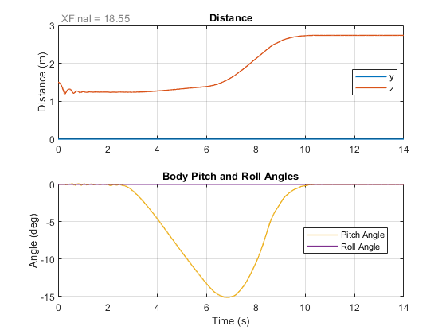
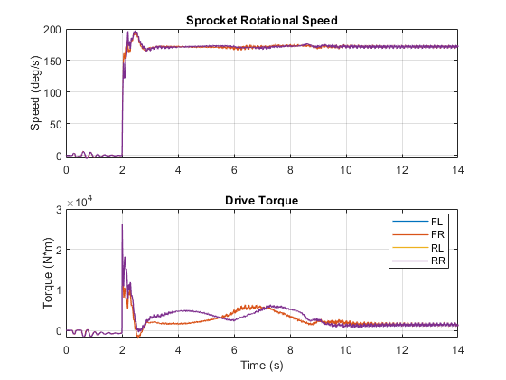
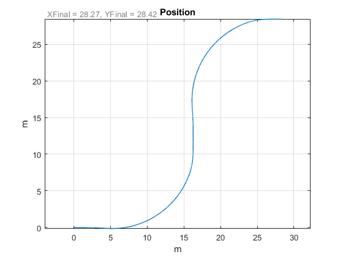

Belt Tracks (Four), Roller Contact Point Cloud with Articulated Steering
(return to Tracked Vehicle Model with Simscape Overview)
This example models a tracked vehicle with a rubber belts in an abstract manner. Contact between the track and the ground is modeled using a point cloud on the rollers and idlers. The point cloud radius includes the depth of the belt. This method permits significantly faster simulation for it is far simpler than modeling each segment of the track and all the contact forces with the undercarriage and ground. Contact forces are modeled using the Spatial Contact Force block.
The track can be tested on uneven terrain, slope, and a flat plane. The sprocket is driven with a flexible driveshaft. The articulated chassis (joint in the middle) permits steering.
Contents
Model
In this example, four tracks are modeled along with the chassis.
Track Subsystem
The track is composed of the undercarriage and a visual element to represent the track segments which includes parameters for the assumed mass, inertia, and CG of the belt segments. The undercarriage contains the rollers, sprocket, and two idlers. Everything is rigidly attached to the frame except one idler is attached to an arm which can pivot slightly. Contact geometry (point clouds) in the undercarriage subsystem connect via a Simscape bus to Spatial Contact Force block to model ground contact.
Rollers Subsystem
This subsystem models the rollers, idler, and sprocket. They each can rotate around shafts attached to the lower frame. One idler is attached to an arm which can pivot slightly.
The sprocket joint interfaces to 1D mechanical rotational port. This represents a mechanical shaft connection to the sprocket. It can be attached to Simscape models of gears, hydrostatic transmissions, and electric motors.
The bus of connections at port R contains the connections to the geometry that is used to model contact with the ground. The rollers and idlers have point clouds whose radius includes the depth of the track.
Lower Roller Subsystem
The lower rollers, sprocket, and idler contain a solid to represent the inertial properties. The rollers and idler include a point cloud to model contact with the ground, and a visual element to animate the part spinning in the model.
Track Subsystem
The track is modeled as a solid. It provides a visual indication of where the track segements would be. It also includes mass and inertia properties which can be parameterized to match the full set of track segments.
Simulation Results: Terrain Test, Fixed Frame Pivot
Below are the simulation results from a test where the track is driven over a hilly terrain. The terrain is defined using the Grid Surface block. An STL file was imported and interpolation was used to create a regular grid composed of 100x100 points.
Elapsed Sim Time = 33.9005 
Simulation Results: Terrain Test, Revolute Frame Pivot
We repeat the same test but modify the track frames so that the rollers and idler can pivot with respect to the chassis.
Elapsed Sim Time = 31.143
Simulation Results: Slope Test
Below are the simulation results from a test where the track is driven up a slope. The slope was defined using a MATLAB function. This would let us easily sweep the grade of the slope to determine when the design would no longer meet requirements. The terrain is defined using the Grid Surface block.
Elapsed Sim Time = 30.8785  
Simulation Results: Plane Test
Below are the simulation results from a test where the track is driven on a flat plane. The front tracks are steered using Ackermann steering angles, and the drive speed of all four tracks are modified based on the steering angle so that the tractor drives in a circular curve.
Elapsed Sim Time = 64.0076